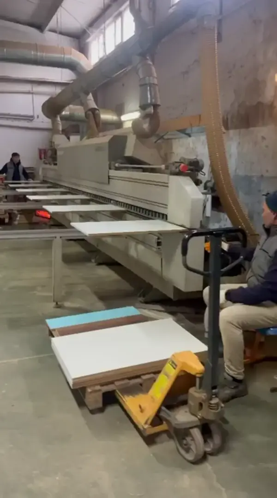
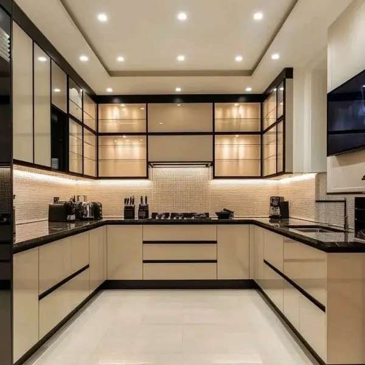
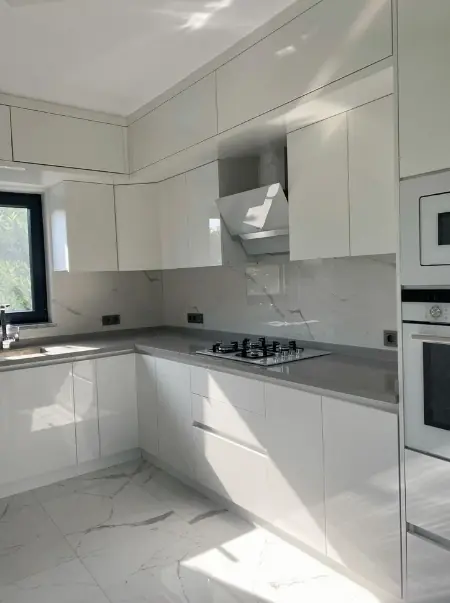
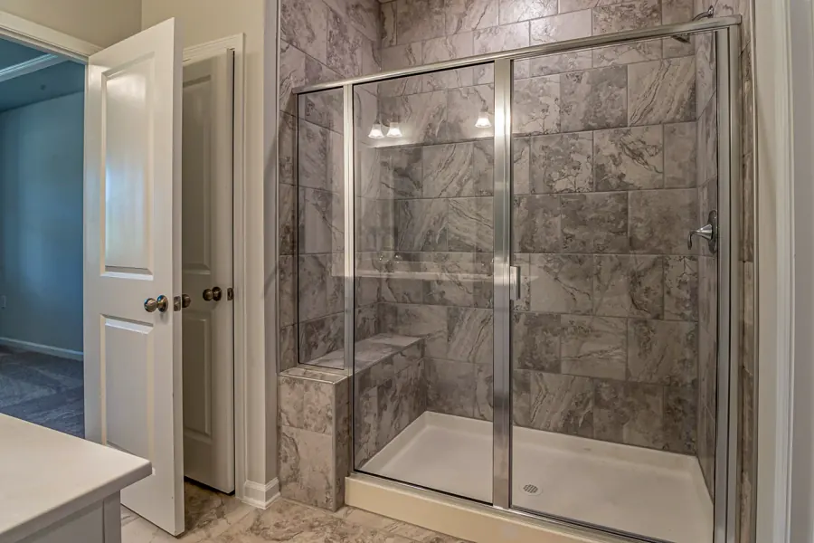
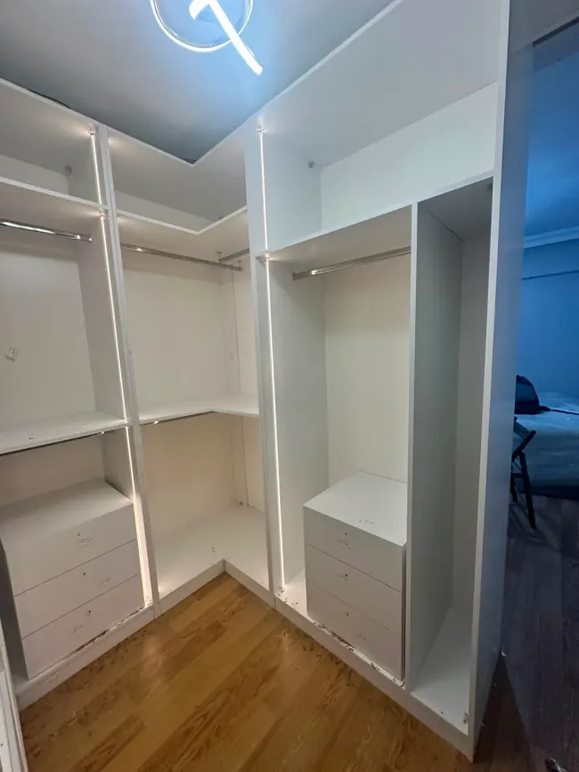
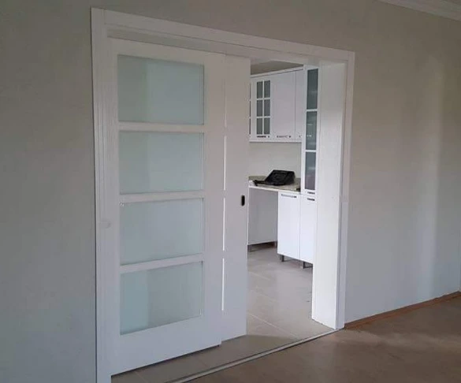

🏭 Ümraniye Atölyemiz
CNC İmalat & Ebatlama
18 mm E1 MDF Hassas Kesim Parkuru
Kendi marangoz ustalarımız ve yüksek hassasiyetli CNC makinelerimizle milimetrik üretim.
Ümraniye imalat tesisimizde membran, ipek mat lake, akrilik ve matplus teknolojisiyle mekana özel mutfak ve ahşap mobilya üretiyoruz. Lazerli hassas ölçüm, fotogerçekçi 3D mimari projelendirme ve doğrudan atölye fiyatlarıyla.

Ayna Parlaklığında Akrilik & Füme Cam Mutfak
2026 Özel Koleksiyonuİstanbul genelinde teslim ettiğimiz gerçek müşteri mutfakları ve Ümraniye atölyemizin usta işçiliğinden güncel kareler.

🏭 Ümraniye AtölyemizKendi marangoz ustalarımız ve yüksek hassasiyetli CNC makinelerimizle milimetrik üretim.
 🔨 Montaj Aşaması
🔨 Montaj Aşaması
Koruyucu filmleri üzerinde, montajı usta ekibimizce tamamlanan güncel mutfak projemiz.
 ⭐ Teslim Edildi
⭐ Teslim Edildi
Fırın boyalı çıtalı kapaklar, porselen tezgah ve ömür boyu garantili mekanik konfor.
Çizilmez senosan akrilik paneller ve alüminyum çerçeveli aydınlatmalı vitrin dolapları.
 ⭐ Teslim Edildi
⭐ Teslim Edildi
Eksiz vakum PVC presleme ile suya ve buhara %100 dayanıklı, bütçe dostu kalite.
 🔨 Montaj Aşaması
🔨 Montaj Aşaması
Milimetrik lazer ölçüsüyle boşluksuz yerleşim ve maksimum depolama alanı.
Mutfaktan banyoya, giyinme odasından iç kapılara kadar evinizin tüm ahşap ve mobilya ihtiyaçlarını tek elden, mimari titizlikle üretiyoruz.

Membran, Matplus, Akrilik, Lake ve High Gloss kapak seçenekleriyle mekanınıza özel fonksiyonel mutfaklar.

Suya ve neme %100 dayanıklı MDF-Lam ve lake banyo dolapları, LED aynalı ve gizli depolama hazneleri.

Kırım dökümden sıhhi tesisata, seramik döşemeden duşakabin ve asma tavan montajına anahtar teslim süreç.

Sürgülü ray dolaplar, modern menteşeli kapaklar, akıllı pantolonluk ve çekmece bölücü sistemleri.

Salon TV üniteleri, antre vestiyer ve portmantolar, dekoratif ahşap lambriler ve özel tasarım kitaplıklar.
Mekana entegre yatak başlıkları, LED aydınlatmalı komodinler, şifonyerler ve makyaj masası tasarımları.

Açık giyinme dolapları, ada çekmece üniteleri, füme alüminyum çerçeveli cam kapaklar ve sensörlü aydınlatma.

Ada mutfak tasarımları, porselen ve Çimstone tezgahlar, tezgah arası seramik uygulamaları ve komple kırım yenileme.

İpek mat lake oda kapıları, dayanıklı membran kapılar, manyetik kilitli ve gizli menteşeli ses yalıtımlı seriler.
Mutfak dolabınızın ömrünü ve estetiğini belirleyen en kritik unsur kapak teknolojisidir. İhtiyacınıza uygun modeli aşağıdan seçerek teknik detayları inceleyebilirsiniz.
Ham MDF yüzeyine CNC makinelerde özel oymalar, çıtalar veya düz motifler işlendikten sonra yüksek ısı ve vakum presle PVC folyo kaplanır. Ek yeri bulunmadığı için su buharına ve neme karşı mükemmel izolasyon sunar.

Özel nanoteknolojik kaplaması sayesinde parmak izi bırakmayan, ışığı yansıtmayan ipeksi mat dokusuyla modern mimarinin en çok tercih edilen minimalist tasarım kapağıdır.

MDF plaka üzerine 1.4 mm kalınlığında orijinal çizilmez akrilik tabakanın PUR tutkalla lamine edilmesiyle üretilir. Kristal netliğinde derinlik ve ışık yansıması sunar.

İç mimarların vazgeçilmezi olan lake mutfaklar, ham MDF üzerine kat kat uygulanan astar, zımpara ve poliüretan fırın boya ile elde edilir. Kenarlarında bant veya ek yeri asla bulunmaz; tek parça ipeksi bir heykel gibi durur.

MDF-Lam üzerine uygulanan yüksek parlaklıktaki UV lak tabakasıyla üretilir. Bütçeyi yormadan modern, ışıltılı ve şık bir mutfak sahibi olmak isteyenler için en ideal alternatiftir.

Ölçü alımından montaja kadar tamamen atölye güvencesiyle stressiz süreç.
CNC makinelerimiz, fırın boyahanemiz ve uzman marangoz kadromuzla doğrudan üretim gücü.
Aracı mağaza ve komisyoncu olmadan Ümraniye Yukarı Dudullu tesisimizde üretim yapıyoruz. Videomuzda CNC kesim parkurumuzu, lake boya hazırlıklarımızı ve atölye titizliğimizi izleyebilirsiniz.
Ümraniye atölyemizde ürettiğimiz ve kendi uzman montaj ekibimizle teslim ettiğimiz projelerden gerçek müşteri değerlendirmeleri.
"Ataşehir'deki evimiz için ipek mat lake mutfak ve ada tezgah yaptırdık. Ölçüyü milimetrik aldılar, söz verdikleri gibi 17. günde montaj tamamlandı. Blum mekanizmalar harika çalışıyor. Atölyeden doğrudan almak hem çok güvenli hem de piyasaya göre çok avantajlı oldu."
"Ümraniye atölyelerini bizzat ziyaret edip CNC kesim parkurunu ve malzemeleri gördüm. Membran kapak kalitesi ve sıfır derz kenar bantlaması kusursuz. Kendi evim bittikten sonra annemin mutfağını da kendilerine yaptırdık. Emeğinize sağlık."
"Çekmeköy'deki villamızın giyinme odasını ve komple banyo tadilatını anahtar teslim yaptılar. Kırımından seramik döşemesine kadar her gün bilgilendirildik. Füme camlı akıllı dolaplar tam istediğimiz gibi bir lüks hava kattı."
Mutfak dolabı sipariş süreci, malzeme farkları, keşif ve teslimat ile ilgili merak ettiğiniz tüm detaylar.
Mutfak ölçülerinizi veya fotoğrafınızı WhatsApp hattımıza iletin; iç mimarımız 15 dakika içinde ihtiyaçlarınıza özel malzeme detaylarıyla metretül maliyetini çıkarsın.
Atölyemize gelerek malzeme numunelerini, boya fırınımızı ve CNC işleme parkurumuzu canlı görebilirsiniz.
Ümraniye / Dudullu Sanayi Bölgesi, İstanbul
Mutfak Dolabınız Ürünleri · Membran & Lake İmalat Tesisi